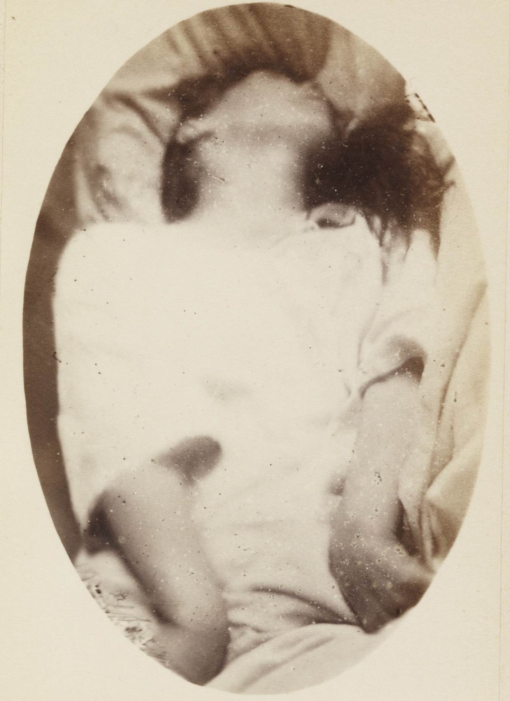

Comparação chocante
Simples × complexa: um critério basta
Simples e complexa não pedem "pacote completo" de desvios: um critério fora do padrão já reclassifica. A regra "1 basta" é a pegadinha de prova e o organizador da tabela.
Dois tipos
Existem dois tipos de crise febril: simples (típica) e complexa (atípica). A simples é a tradicional, a mais comum, e a que permite relaxar o raciocínio de investigação. A divisão cai bem em prova e precisa estar operacional.
O padrão da simples
A simples é crise generalizada tônico-clônica de curta duração.
Por definição: duração abaixo de 15 minutos. Na prática: duração bem abaixo de 5 minutos. O número de definição (15) e o da vida real (<5) coexistem e não se fundem.
A simples não se repete em 24 horas. O período pós-ictal é breve: em média, em cerca de 30 minutos a criança já está recuperada. Exame neurológico normal depois da crise — critério operacional central.
Padrão a gravar: GTC curta + sem recorrência em 24 h + pós-ictal breve + exame neurológico normal.
Caso-padrão (quadro rico)
Criança pequenininha com IVAS; a febre sobe (ex.: 40 °C); perde a consciência; entra em fase tônica; em seguida abalos clônicos; a crise acaba; fica sonolenta. Meia hora depois, em regra, recuperou — e o bem-estar residual depende da doença de base da febre.
A complexa: o que preocupa
A crise complexa (atípica) muda a figura. Critérios:
1. Início focal (ou possibilidade de início focal) · 2. Duração maior que 15 minutos · 3. Repetição em 24 horas · 4. Período pós-ictal longo ou sinal neurológico ao exame físico após a crise.
Regra de ouro / pegadinha: basta um desses critérios presentes para classificar como complexa/atípica. O nome atípica ajuda: é a crise que sai do padrão.
| Simples (típica) | Complexa (atípica) | |
|---|---|---|
| Início | Generalizado (GTC) | Focal ou possível focal |
| Duração | Def. <15 min · prática ≪5 min | >15 min |
| Recorrência 24 h | Não | Pode repetir |
| Pós-ictal | Breve (~30 min recuperada) | Longo e/ou sinal residual |
| Exame neurológico pós | Normal | Pode haver déficit |
| Regra | Padrão que relaxa | 1 critério basta |

Simples = GTC curta + sem 24 h + pós breve + exame N · Complexa = 1 desvio basta · def 15 ≠ prática 5.
A classificação decide o grau de dúvida e o peso da investigação — sem transformar toda complexa em painel automático.